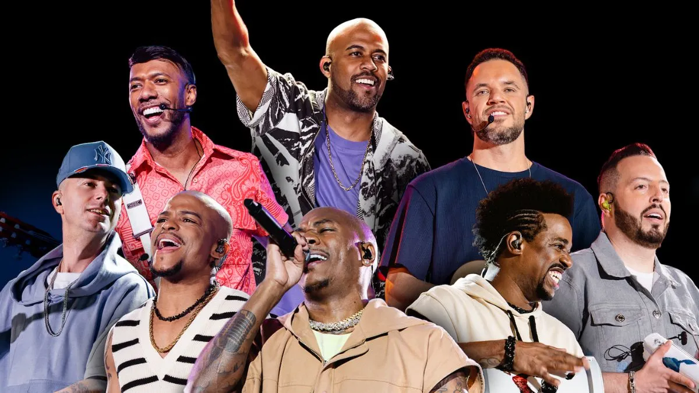

A Banda
Nicolas - Renato - Pietro - André - Rebeca
© Todos os direitos reservados!
Sobre a Banda
A Turma do Pagode é um grupo de samba formado em 1994 no bairro de Parada Inglesa, na Zona Norte de São Paulo. Conhecida por sua energia contagiante e músicas que conquistam multidões, a banda se destacou com sucessos como "Lancinho", uma das músicas mais pedidas nas rádios brasileiras. Com quase três décadas de história, a Turma do Pagode segue encantando fãs em todo o Brasil, sendo referência no gênero do samba e pagode.
História
A banda foi formada por amigos apaixonados por samba e começou sua jornada em pequenos shows na cidade de São Paulo. Em 2001, lançou seu primeiro álbum, Turma do Pagode – Ao Vivo, com o incentivo do cantor Netinho de Paula, que também sugeriu o nome da banda. Desde então, a Turma do Pagode lançou diversos álbuns e DVDs de sucesso, incluindo Dom de Sambar (2009), que contou com parcerias de peso como Leci Brandão e Péricles.
Ao longo dos anos, a banda dividiu o palco com grandes nomes do samba e participou de eventos icônicos, como o projeto Verão da FM O Dia no Rio de Janeiro. Em 2015, o grupo foi reconhecido com o Prêmio Multishow na categoria "Melhor Grupo".
Com uma discografia rica e cheia de sucessos, a banda celebra momentos marcantes como a gravação do DVD XV – Ao Vivo em 2016, que contou com convidados como Thiaguinho, Arlindo Cruz e Aviões do Forró.
Integrantes
Atualmente, a Turma do Pagode é composta por:
- Leiz: Tantã e vocal
- Caramelo: Banjo e vocal
- Rubinho: Pandeiro
- Tiago e Neni: Percussão
- Marcelinho TDP: Cavaquinho
- Leandro Filé: Violão
- Fabiano Art: Surdo (Tipo de tambor)
Cada integrante traz seu talento e personalidade únicos, criando a harmonia perfeita que define o som do grupo.
Conquistas e Destaques
A Turma do Pagode não é apenas um sucesso de público, mas também de crítica. Com mais de 7 milhões de fãs nas redes sociais e quase 3 milhões de ouvintes mensais no Spotify, a banda se mantém entre as mais ouvidas do gênero. Suas músicas ultrapassam gerações, sempre presentes em festas, encontros e momentos especiais.
Curiosidades
- A música "Lancinho" permaneceu entre as dez mais pedidas em rádios por mais de cinco meses após seu lançamento.
- O DVD Misturadin 2 contou com parcerias inusitadas, incluindo o grupo Fundo de Quintal, Rael e Henrique & Diego.
- A banda é conhecida por sua interação calorosa com os fãs e pela energia inesquecível de seus shows ao vivo.
Integrantes da Banda
